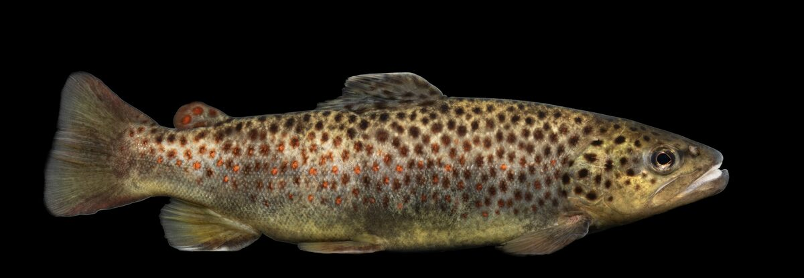

Rozpoznawanie i biologia
Wygląd i cechy rozpoznawcze
Pstrąg potokowy (Salmo trutta m. fario) jest formą osiadłą troci wędrownej i należy do rodziny łososiowatych. Ciało ma wrzecionowate, lekko bocznie spłaszczone, z charakterystyczną dla łososiowatych płetwą tłuszczową między płetwą grzbietową a ogonową. Najpewniejszą cechą rozpoznawczą są czerwone lub pomarańczowe kropki z jasną, często niebieskawą obwódką, rozsiane po bokach ciała, zwykle wymieszane z ciemnymi plamkami. Ubarwienie jest bardzo zmienne i zależy od podłoża oraz charakteru wody — od złocistobrązowego w potokach o kamienistym dnie po srebrzyste w większych, głębszych rzekach. Pysk jest stosunkowo duży, sięgający poza tylną krawędź oka, co odróżnia pstrąga od lipienia. W polskich wodach pstrąg potokowy najczęściej osiąga 25–40 cm, choć w żyznych rzekach krainy pstrąga i w większych systemach trafiają się okazy ponad 50 cm.
Środowisko i występowanie w Polsce
Pstrąg potokowy jest gatunkiem wskaźnikowym tak zwanej krainy pstrąga — najwyżej położonego odcinka rzeki w klasycznym podziale na krainy rybne. To wody szybkie, chłodne (optimum poniżej 18–20°C), dobrze natlenione, o dnie kamienisto-żwirowym. W Polsce występuje przede wszystkim w potokach i rzekach Karpat oraz Sudetów (dorzecza Dunajca, Sanu, Raby, Soły, Bobru, Kwisy, Nysy Kłodzkiej), a także w rzekach pojezierzy i Pomorza, takich jak Drawa, Gwda, Słupia, Parsęta, Wda czy Łyna, gdzie warunki termiczne pozwalają na całoroczne bytowanie. Pstrąg jest silnie terytorialny — większy osobnik zajmuje najlepsze stanowisko: rynnę za głazem, podmyty brzeg, koronę zwalonego drzewa. Stan populacji w wielu rzekach zależy od zarybień i jakości tarlisk, dlatego część okręgów PZW prowadzi intensywne programy ochrony cieków pstrągowych.
Biologia i tarło
Tarło pstrąga potokowego przypada na późną jesień i początek zimy, najczęściej od października do stycznia, przy temperaturze wody spadającej poniżej około 8°C. Samica wybiera żwirowe płycizny o wartkim nurcie i wybija ogonem gniazdo, do którego składa ikrę, a następnie przysypuje ją żwirem. Inkubacja trwa całą zimę, a wylęg pojawia się wczesną wiosną — dlatego tak groźne dla populacji są zimowe prace regulacyjne i pobór kruszywa z koryt rzek. Pstrąg dojrzewa płciowo zwykle w trzecim lub czwartym roku życia. Tempo wzrostu silnie zależy od żyzności wody: w ubogich potokach górskich ryba pięcioletnia może mierzyć ledwie 25 cm, podczas gdy w bogatych rzekach podgórskich w tym samym wieku przekracza 40 cm. Żyje przeciętnie kilka do kilkunastu lat.
Żerowanie według pór roku
Wiosną, po przyborach i ruszeniu wód, pstrąg żeruje intensywnie, odbudowując kondycję po tarle i zimie — podstawą pokarmu są wtedy larwy chruścików, jętek i widelnic spływające z nurtem. Późną wiosną i latem coraz większą rolę odgrywają owady dorosłe zbierane z powierzchni, a wieczorne rojenia jętek potrafią uruchomić wyraźne żerowanie powierzchniowe. W upały, gdy woda się nagrzewa, pstrąg ogranicza aktywność i przenosi się w miejsca najgłębsze, ocienione i najlepiej natlenione, żerując głównie o świcie i po zmroku. Większe osobniki z wiekiem przechodzą na pokarm rybny — chętnie atakują strzeble, kiełbie, ślizy i młode pstrągi. Jesienią, przed tarłem, żerowanie ponownie się nasila, jednak wtedy w większości wód obowiązuje już okres ochronny. Nigdy nie ma gwarancji żerowania — pogoda, stan wody i presja wędkarska potrafią całkowicie zmienić obraz dnia.
Przepisy i połów
Wymiar, okres ochronny i limit — orientacyjnie
Według ogólnych zasad PZW wymiar ochronny pstrąga potokowego wynosi orientacyjnie 30 cm, okres ochronny trwa od 1 września do 31 stycznia (w rzekach przymorskich bywa ustalony inaczej, często od grudnia), a limit dobowy to zwykle 2 sztuki; gatunek objęty jest też łącznym rocznym limitem dla ryb wędrownych i drapieżnych. Podkreślamy: są to wartości orientacyjne na dzień publikacji i mogą się różnić między okręgami oraz konkretnymi wodami. Wody górskie bardzo często objęte są osobnymi regulaminami łowisk specjalnych — z podwyższonym wymiarem (np. 35–40 cm), obowiązkiem stosowania haków bezzadziorowych, zasadą „złów i wypuść” lub dodatkowymi zezwoleniami. Przed wyjazdem koniecznie zweryfikuj aktualne zasady w zezwoleniu swojego okręgu PZW, regulaminie danego łowiska i na pzw.org.pl.
Metody i przynęty
Dwie klasyczne metody to muszkarstwo i spinning ultralekki. W wędkarstwie muchowym sprawdzają się nimfy (klasyczne wzory typu Pheasant Tail, Hare's Ear, ciężkie nimfy z główką wolframową do łowienia „na krótką nimfę”), mokre muchy oraz suche imitacje jętek i chruścików w okresach rojeń; większe pstrągi reagują też na streamery imitujące małe rybki. Spinningowo używa się małych obrotówek (rozmiar 0–2), wąskich wahadłówek oraz woblerów 3–5 cm prowadzonych pod prąd lub w poprzek nurtu. Zestaw powinien być lekki: krótka wędka 1,8–2,4 m o ciężarze wyrzutu do około 10 g i cienka plecionka lub żyłka. Na wielu łowiskach pstrągowych przynęty naturalne są zabronione, a dozwolone są wyłącznie przynęty sztuczne z pojedynczym hakiem bezzadziorowym — to kolejny powód, by czytać regulamin konkretnej wody.
Taktyka na rzece
Pstrąg widzi i czuje doskonale, więc taktyka zaczyna się od podejścia: poruszaj się w górę rzeki (ryba stoi głową pod prąd i gorzej widzi to, co za nią), stawiaj kroki cicho, wykorzystuj zarośla i nie rzucaj cienia na wodę. Obławiaj miejsca z „strukturą”: rynny za głazami, granice nurtu i spokojnej wody, podmyte brzegi, zwalone drzewa, dołki pod bystrzami. Pierwszy rzut w dane miejsce jest najważniejszy — spłoszony pstrąg potrafi nie żerować przez długi czas. Przynętę prowadź naturalnie z nurtem lub aktywnie pod prąd, unikając nienaturalnego ciągnięcia w poprzek spokojnej wody. Po złowieniu lub spłoszeniu ryby idź dalej; łowienie pstrągów to wędkarstwo wędrowne, w którym w ciągu dnia przechodzi się nieraz kilka kilometrów rzeki. Nawet najlepsza taktyka nie gwarantuje brań — to część uroku tej ryby.
Rekordy Polski — orientacyjnie
Rekordowe pstrągi potokowe notowane w Polsce przekraczały 80 cm długości, zbliżając się do 6 kg masy (oficjalny rekord Polski to 6,00 kg przy 81 cm) — w rejestrach rekordów wędkarskich figurują okazy z dużych rzek południa kraju oraz z systemów, gdzie pstrąg ma dostęp do obfitego pokarmu rybnego. Trzeba jednak pamiętać, że tak duże „potokowce” bywają trudne do odróżnienia od troci jeziorowej czy wędrownej, a dawne rekordy nie zawsze były weryfikowane dzisiejszymi metodami. Realnie bardzo dobrą rybą w polskich warunkach jest pstrąg 45–50 cm, a okaz ponad 60 cm to wynik wybitny, zdarzający się nielicznym. Wartości rekordowe podajemy orientacyjnie — aktualne, oficjalne rejestry prowadzą czasopisma wędkarskie i PZW.
Kulinaria i „złów i wypuść”
Mięso pstrąga jest delikatne, smaczne i cenione kulinarnie, jednak warto wyraźnie oddzielić ryby z hodowli (pstrąg tęczowy ze sklepów i smażalni) od dzikich pstrągów potokowych. Populacje dzikie w wielu rzekach utrzymują się głównie dzięki zarybieniom i ochronie tarlisk, dlatego coraz więcej wędkarzy stosuje zasadę „złów i wypuść”, a liczne łowiska specjalne wprost ją nakazują. Jeśli zamierzasz wypuścić rybę, używaj haków bezzadziorowych, mocz ręce przed dotknięciem ryby, nie wyjmuj jej na suchy brzeg i skróć przebywanie poza wodą do minimum. Jeśli zabierasz rybę zgodnie z limitem, uśmierć ją natychmiast i humanitarnie. Decyzja należy do wędkarza — w granicach regulaminu — ale stan wielu populacji przemawia za umiarem.
Ciekawostki
Pstrąg potokowy, troć wędrowna i troć jeziorowa to formy tego samego gatunku Salmo trutta — różni je strategia życiowa, nie genetyka gatunkowa, a poszczególne formy mogą się krzyżować. Pstrąg potrafi wykazywać zadziwiającą wierność stanowisku: znakowane osobniki łowiono latami w tym samym dołku. Jego terytorializm sprawia, że po wyjęciu z atrakcyjnego stanowiska dużej ryby miejsce to często szybko zajmuje kolejna. Ubarwienie pstrąga zmienia się w ciągu tygodni po przeniesieniu do innego środowiska, co dawniej prowadziło do opisywania rzekomych odrębnych „odmian”. W okresie tarła samce wykształcają hakowato wygiętą żuchwę i intensywniejsze barwy godowe.
FAQ — najczęstsze pytania
Czym pstrąg potokowy różni się od tęczowego?
Pstrąg tęczowy (Oncorhynchus mykiss) to gatunek introdukowany z Ameryki Północnej, masowo hodowany w stawach. Ma różowo-fioletową smugę wzdłuż boku i drobne ciemne plamki pokrywające także płetwę ogonową, natomiast nie ma czerwonych kropek z jasną obwódką typowych dla potokowca. W wodach otwartych tęczak pochodzi niemal zawsze z zarybień lub ucieczek z hodowli; na łowiskach specjalnych bywa podstawową rybą zarybieniową. Regulaminowo oba gatunki bywają traktowane odrębnie, co również warto sprawdzić w zezwoleniu.
Czy mogę łowić pstrągi zimą?
W większości wód krainy pstrąga obowiązuje okres ochronny obejmujący jesień i znaczną część zimy (orientacyjnie 1.09–31.01), więc klasyczny sezon pstrągowy zaczyna się zwykle na początku lutego. Inaczej bywa w rzekach przymorskich oraz na komercyjnych łowiskach specjalnych, które ustalają własne sezony. Pamiętaj też, że niektóre odcinki rzek są całorocznie wyłączone z wędkowania jako obręby ochronne. Zawsze sprawdzaj aktualne zapisy w zezwoleniu okręgu i opisie danej wody.
Jaki zestaw spinningowy na początek?
Uniwersalnym wyborem jest wędka 1,9–2,3 m o ciężarze wyrzutu 2–10 g, mały kołowrotek (wielkość 1000–2500) i cienka plecionka 0,06–0,08 mm z przyponem fluorocarbonowym 0,18–0,22 mm. Do tego garść obrotówek nr 1–2, dwa lub trzy tonące woblery 3–5 cm i mała wahadłówka wystarczą na pierwsze wyprawy. Ważniejsze od ilości przynęt jest poruszanie się po rzece i czytanie wody. Sprawdź wcześniej, czy na wybranym odcinku nie obowiązuje nakaz pojedynczych haków bezzadziorowych.
Skąd wiadomo, że w danym potoku są pstrągi?
Najpewniejsze źródła to opisy wód w zezwoleniach okręgów PZW (oznaczenie wód górskich), informacje kół wędkarskich oraz operaty zarybieniowe publikowane przez okręgi. Pomocne są też cechy samej wody: chłodna, czysta, szybko płynąca rzeka o żwirowo-kamienistym dnie i obecność strzebli czy głowaczy to dobre wskaźniki. Obecność gatunku nie oznacza jednak łatwych połowów — zagęszczenie pstrąga bywa niskie, a ryby ostrożne.
Źródła i weryfikacja
Treści mają charakter przeglądowy i edukacyjny. Podane wymiary, okresy ochronne i limity oparto na ogólnych zasadach PZW aktualnych na dzień publikacji — w okręgach, na wodach górskich i łowiskach specjalnych obowiązują często odmienne, surowsze regulacje. Przed wędkowaniem zweryfikuj zasady w aktualnym zezwoleniu, regulaminie okręgu i na pzw.org.pl. Artykuł nie gwarantuje wyników połowu. Zobacz też: kalendarz brań pstrąga — kiedy bierze najlepiej.